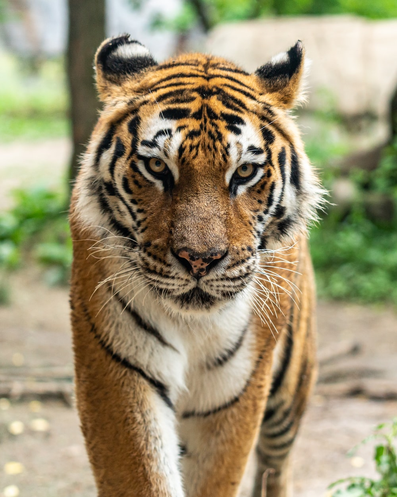
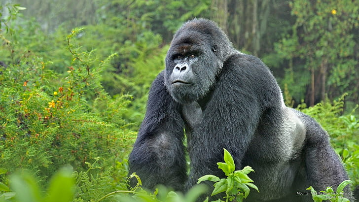

My Favorite Animals

- Tiger

- Fox

- Gorillas
This is how you make Mac and Cheese

- Boil the pasta, drain.
Make the cheese sauce by combining a fat (butter), and starch (flour),
then whisking in the milk products.
- Cook the sauce until it's nice and thick.
Add in shredded cheeses, stir well.
- Combine cheese sauce with cooked pasta.